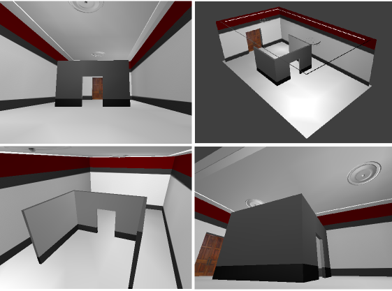

Añadir la cámara interactiva
Una vez que conocemos CameraFPS debemos decidir entre:
- Traer a ese .blend la escena que tengamos ya creada (o crearla desde cero en él)
- Llevar los dos objetos que conforman el artilugio a nuestro diseño.
Nosotros nos quedamos con la segunda opción.
Supongamos que ya disponemos de un entorno arquitectónico por el que nos gustaría pasear como puede ser una sala de exposiciones (de momento sin muchos adornos).
Sus características:
- Se ha eliminado la cámara para evitar problemas cuando añadamos la que trae consigo CameraFPS.
- Tiene dos imágenes mapeadas mediante Malla/Desplegar UVs/Desenvolver. La de la pared es una imagen que hace las veces de módulo repitiéndose a lo largo de todas las pareces de la estancia (no del elemento arquitectónico central)
Una vez abierto nuestro entorno arquitectónico usamos el menú Archivo/Añadir y nos vamos a buscar el .blend CameraFPS; una vez dentro de sus carpetas accedemos a Object y del interior seleccionamos (cameraFPS y motorFPS). Después pulsamos arriba a la derecha Link/Append from Library.
Estos dos objetos son la cámara y el cubo propios del artilugio. Por las características del .blend de origen, y de las propias geometrías, el cubo aparece apoyado en la rejilla y con su Origen en 0,0,0.
Sacamos rápido algunas consecuencias:
- El artilugio es inmenso para nuestra arquitectura.
- La precisión está garantizada porque en nuestro diseño el suelo esta con Localización Z= 0.000.
Pero llega el dilema: ¿escalamos la habitación o escalamos el artilugio?. El problema de no haber trabajado desde el principio con todos los datos tiene consecuencias (negativas, claro) porque cualquiera de las dos opciones es mala; y la menos mala es escalar la arquitectura. ¿Por qué? Si escalamos el artilugio no alteramos su velocidad así que el jugador parecerá que va corriendo y no andando, mientras que si escalamos la arquitectura el problema es que la iluminación cambia porque los valores de Energía de las lámparas no se escalan. Entre arreglar el tema de la velocidad y el de la iluminación es mucho mejor optar por lo segundo.
De momento nos vamos al cuadro Propiedades ("N") y en la botonera Cursor 3D hacemos que todas su coordenadas sean 0.0000.
Lo necesitamos para tomarlo como origen en el escalado, pero eso sólo funciona si el plano del suelo de la arquitectura también está con valor Location Z= 0.000.
Ahora:
- Cambiamos el Centro de pivotaje a Cursor 3D.
- Seleccionamos los dos objetos de CameraFPS y después usamos Seleccionar/Inverso.
- Nos colocamos en un punto de vista ortográfico ("NumPad 5") y en sombreado Alambre ("Z") para hacer el escalado ("S"). La finalidad es controlar que la cámara quede a una altura correcta respecto a las puertas.
Sólo nos queda:
- Arreglar el tema de la iluminación volviendo a estudiar lo valores de Energía de las lámparas
- Girar el artilugio 90º en el eje Z ("RZ90") y colocarlo de espaldas a la puerta principal.
- No olvidar volver a poner el Centro de pivotaje a Punto medio para seguir trabajando.
Analiza y estudia el archivo .blend
Usa este .blend para compararlo con tu resultado una vez que hayas realizado toda la práctica. Te servirá de referencia para autoevaluarte.